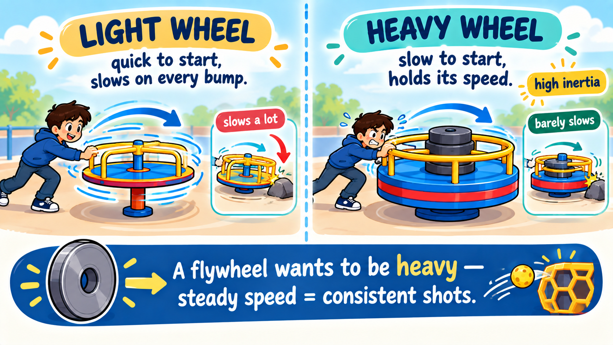
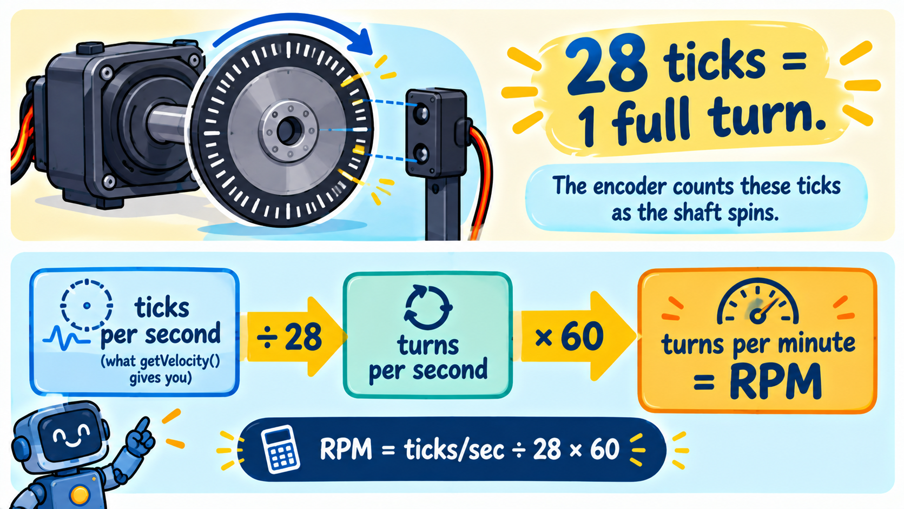
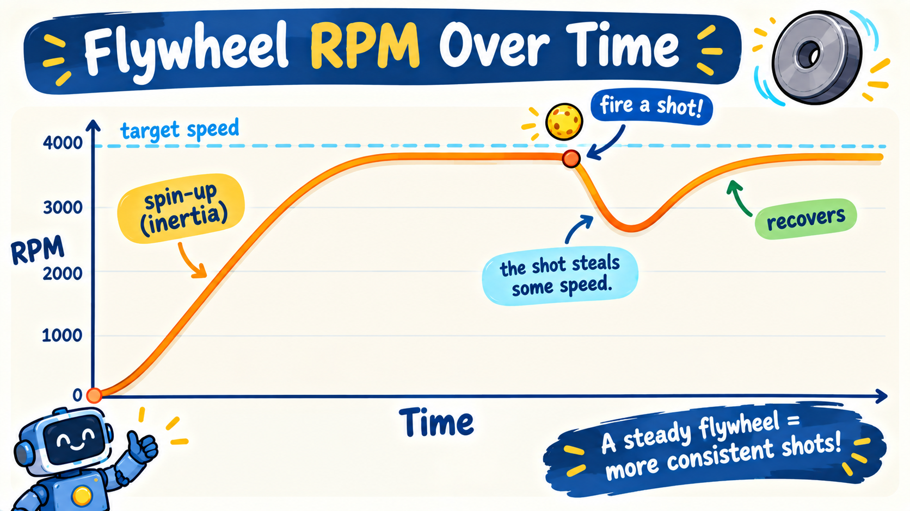

Last lesson your indexer fed pollen out and it just dribbled onto the floor — because there was nothing to launch it. This lesson you build that launcher: the flywheel. It's the cannon your indexer was always feeding.
A flywheel shooter works exactly like a baseball pitching machine: a heavy wheel spins up to high speed, and when a game piece is pushed against it, the spinning wheel grabs the piece and flings it across the field — in our case, up into the hive. You'll build it, then learn to measure its speed and tune it, all in one subsystem.
This lesson bundles the three things that make a shooter actually work: getting the wheel up to speed (spin-up), measuring that speed with the motor's encoder, and tuning it live so every shot lands. Same four-part subsystem shape as before — just a bigger, more interesting mechanism.
Here's the surprising part: when you set the motor to full power, the flywheel does not jump to top speed instantly. It takes about a second to get there. That delay is inertia — a heavy spinning thing resists changing how fast it's going.

Why choose heavy, if it's slower to spin up? Because when the indexer shoves a game piece into the wheel, the piece steals some of the wheel's speed. A light wheel would drop a lot on every shot, so your second and third shots would come out weaker. A heavy wheel barely slows down — so every shot flies about the same. That consistency is worth the wait. (The wait is also why real drivers spin the flywheel up early, before they reach the goal.)
Flywheel.javaA new file appeared: Flywheel.java. Open it and read the top. The imports, the tuning constants,
the shooter motor field, and the constructor are written for you — the constructor finds the
"shooter" motor, just like your other subsystems found theirs. One detail to notice: the motor's type is
DcMotorEx, not plain DcMotor. The "Ex" (extended) version can do one extra thing we need —
report its own speed — and you'll use that in a moment.
The flywheel needs to remember two things between loops: whether it's running, and how much power we're giving it (so the trim can nudge that value and have it stick).
▸ Flywheel.java : Flywheel : FieldsFlywheel.java⩢ Copyprivate boolean spinning = false; // is the flywheel running right now?
private double power = BASE_POWER; // the nudgeable power level, remembered between loopspower starts at BASE_POWER (a constant near a good shot), and the trim will move it up or down
from there.
Now the methods — the public doors into the flywheel, just like the indexer had. This subsystem has a few more, because it does more: turn on/off, nudge the power, and report both whether it's spinning and its real speed.
An encoder is a sensor built into the motor that counts tiny electrical ticks as the shaft
turns. Your goBILDA motor produces 28 ticks per full revolution. The method
shooter.getVelocity() hands you the encoder's speed in ticks per second — and from that
you can compute real RPM (revolutions per minute):

That's exactly what getRpm() does below. getVelocity() only exists on DcMotorEx —
now you see why the motor field is that type.
Flywheel.java⩢ Copy/** Flip the flywheel on or off. Call this once per button press. */
public void toggle() {
spinning = !spinning;
}
/** Nudge the power up or down. Pass the stick amount (up = positive). */
public void nudge(double amount) {
if (Math.abs(amount) < STICK_DEADZONE) return; // ignore tiny drift
power += amount * NUDGE_STEP; // creep up or down a little
power = Math.max(MIN_POWER, Math.min(MAX_POWER, power)); // keep it in range
}
/** True while the flywheel is running -- lets the OpMode show it or gate a shot. */
public boolean isSpinning() {
return spinning;
}
/** The flywheel's REAL speed in RPM, measured by the encoder. */
public double getRpm() {
double ticksPerSecond = shooter.getVelocity(); // the encoder's speed, in ticks per second
return ticksPerSecond / TICKS_PER_REV * 60.0; // ticks/sec -> revs/sec -> revs/min (RPM)
}
/** The power level we're currently commanding (0..1), for telemetry. */
public double getPower() {
return power;
}nudge() — the trimThis is how the driver tunes the shot live. Each loop, the OpMode hands nudge() the right-stick
value. If the stick is basically centered, we ignore it (that's the deadzone — sticks are never
perfectly still). Otherwise we creep power up or down by a tiny NUDGE_STEP and clamp
it between MIN_POWER and MAX_POWER so it can never run away. Because power is a field, it
stays where you leave it — let go of the stick and the setting holds. Like a volume knob for your shot.
update(): drive the motor from the stateSame idea as every subsystem: update() runs every loop and makes the hardware match the state. When
the flywheel is on, run it at the current (nudged) power; when off, stop it.
Flywheel.java⩢ Copyshooter.setPower(spinning ? power : 0.0);Give the new subsystem a home in Robot.java — the same two edits as always: declare it, then build
it and add it to the scheduler.
Robot.java⩢ Copypublic final Flywheel flywheel; // the shooter's spinning wheelRobot.java⩢ Copyflywheel = new Flywheel(hardwareMap); // build it -- the constructor finds "shooter" in the config
subsystems.add(flywheel); // register it so robot.update() calls flywheel.update() every loopThree small pieces in MecanumDrive.java: toggle with Y, trim with the right stick, and put
the RPM on the Driver Hub so you can watch it.
Y is a toggle, so it needs edge detection (the same trick from the intake — act only on the press, not every loop it's held). The right-stick trim is a hold, so we just feed it in every loop.
▸ MecanumDrive.java : Flywheel : LoopMecanumDrive.java⩢ Copy// Y toggles the flywheel on/off (edge detection -- one flip per press).
if (gamepad1.y && !previousY) robot.flywheel.toggle();
previousY = gamepad1.y;
// Right stick trims the power live: push up = faster, down = slower.
robot.flywheel.nudge(-gamepad1.right_stick_y);On a gamepad, pushing the stick up reads as a negative number (it's upside-down by
tradition). We flip the sign with - so that pushing up gives a positive nudge — up means
faster, which is what your thumb expects.
MecanumDrive.java⩢ Copytelemetry.addData("Flywheel", robot.flywheel.isSpinning()
? String.format("ON %.0f%% power", robot.flywheel.getPower() * 100)
: "off");
telemetry.addData("Flywheel RPM", "%.0f", robot.flywheel.getRpm());Build, Init, and Start. Now watch the Flywheel RPM line on the Driver Hub as you play:

Set Wheel Inertia to light, spin up until the READY light is green, then hold X and don't let go. Watch the green line crash below the dashed target — your shots drop below the “make it” line and fall short. Now drag inertia to heavy and rapid-fire again: the line barely dips and the shots keep landing. That's exactly why real teams add mass to their flywheels — but a heavy wheel is slower to spin up, so there's a trade-off.
You can now see the RPM dip after each shot — but nothing fixes it. If you fire fast, each shot leaves a little slower than the last. The next lesson adds a controller that watches the RPM and automatically adds power to snap it back after every shot, so rapid-fire shots all land the same. That's the payoff the encoder was setting up.